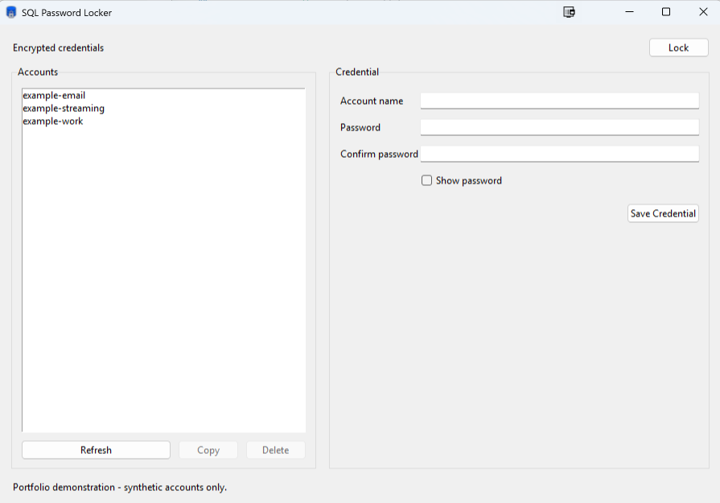
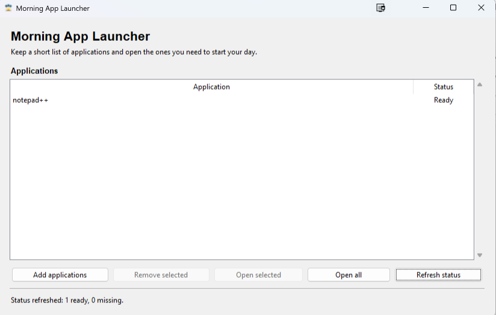
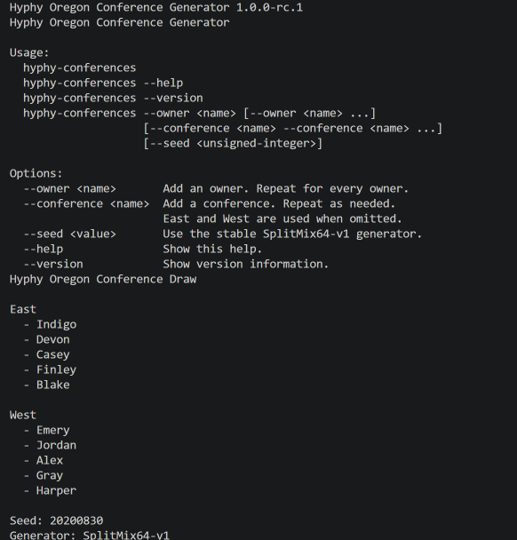

Integration and interoperability
Transforming structured healthcare data into dependable API workflows, with validation and mapping made explicit.
Healthcare integration · practical automation
Healthcare integration engineer building secure, testable automation and reliable data workflows with Python, SQL, APIs, and C#.
I build systems that turn complex interfaces and repetitive operational work into maintainable, reviewable software. My public projects emphasize explicit boundaries, deterministic behavior, careful failure handling, and evidence over hype.
Engineering focus
I focus on the places where correctness, clarity, and operational trust matter more than novelty.
Transforming structured healthcare data into dependable API workflows, with validation and mapping made explicit.
Replacing repetitive work while preserving confirmation, observability, recovery paths, and human control.
Using automated tests, static analysis, CI, documentation, and narrow boundaries to support claims about behavior.
Featured projects
Each project addresses a practical problem and documents both what works and where its boundaries remain.
01 · Security-minded application design
A SQL Server-backed Python password vault that encrypts credential passwords before persistence and exposes the same behavior through a CLI and responsive Tkinter interface.
Layered services, transactional parameterized persistence, versioned schema setup, enforced encrypted transport, bounded background work, and isolated automated checks.
This portfolio project has not received a professional security audit. It does not provide master-password recovery, key rotation, or protection for a fully compromised host.

02 · Safety-first developer tooling
A cross-platform Python CLI for confirmed local Git project creation and optional private-by-default GitHub repository creation.
Redacted plans, default-no confirmation, allowlisted commands, narrow adapters, credential-safe diagnostics, and conservative rollback keep every mutation reviewable.
This GPL-3.0-or-later project is a substantial security-focused modernization of Tim Eichinger’s Windows implementation, which was inspired by Kalle Hallden’s original project-automation concept. The original concept is not claimed as independent work.
03 · Deterministic data workflow
Python automation that retrieves public point-spread data and updates a structured Excel pool workbook while preserving stable matchup rows.
Retrying data ingestion, explicit team normalization, Pacific-time schedule handling, deterministic row identity, and saved fixtures for unusual weekly schedules.
The scraper depends on third-party markup, workbook writes are not transactional, and live website, notification, and production-workbook integrations are outside the automated suite. The project is not affiliated with or endorsed by the NFL.
04 · Privacy-conscious desktop utility
A Windows desktop utility for saving a short application set and opening the right tools at the start of the day.
Layered controller and presentation logic, safe legacy migration, injectable process launching, keyboard-accessible interaction, and logs that omit application paths.
The application launches user-selected files with the current user’s permissions. It does not sandbox processes, scan files, sign executables, or replace Windows security controls.

05 · Deterministic legacy modernization
A cross-platform .NET CLI that divides fantasy-football league owners evenly between conferences through interactive or scripted workflows.
Core and CLI separation, balanced assignment, stable seeded output, Unicode-aware input validation, explicit exit codes, and portable release packaging.
Seeded output is deterministic, not cryptographically random or externally certified for fairness. The project is independent and claims no league or organizational endorsement.

Project evolution
The most useful before-and-after stories are about clearer boundaries and safer behavior—not simply newer tools.
SQLite Password Locker established an authenticated local vault with scrypt, AES-256-GCM, SQLite, a CLI, and a Tkinter interface. The SQL-backed successor preserved the application-layer encryption model while introducing Argon2id key wrapping, transactional ODBC persistence, schema management, validated TLS transport, and a bounded background worker for the GUI.
The progression is not a claim that either project is professionally audited. It is evidence of increasingly explicit threat models, infrastructure boundaries, and operational limitations.
Project Creation Automation and Hyphy Oregon both retain meaningful project history while replacing tightly coupled legacy behavior with testable layers. One focuses on safe filesystem, Git, GitHub, credential, and IDE boundaries; the other separates assignment rules from terminal interaction and defines a stable seeded generator.
The shared lesson is that modernization works best when behavior, provenance, limitations, and migration decisions remain inspectable.
Supporting work
Documentation for mixed-experience audiences
I originally created the Git Cheat Sheet for FreeCodeCamp’s technical documentation project while participating in a Portland-area Python group that wanted to learn more about Git. I turned the assignment into a practical command reference for that group. Over time, it also became a useful resource for support coworkers who needed Git guidance without working deep in application development.
It remains a practical quick reference rather than an authoritative or complete source of Git documentation. Its lasting value is the exercise of explaining potentially destructive tools clearly to people with different levels of experience.
Review the Git Cheat Sheet on GitHubEvidence-based skills
These groupings describe technologies and practices demonstrated by the projects above and the verified professional summary below.
Professional background
Since 2017, my work has involved developing and supporting HL7 integrations that transform data from electronic medical record systems into product-specific API workflows.
That work spans requirements analysis, data transformation, automated testing, deployments, production support, and customer-facing troubleshooting. The through-line is practical: reduce repetitive effort, strengthen validation, and leave systems easier to operate and maintain.
Development process and authorship
This site and its project narratives were developed by David Mevorah with AI-assisted research, drafting, and implementation. David selected the content, verified the claims, and retains responsibility for what is published.
Contact
Explore the source, project histories, and current public work on GitHub, or connect professionally on LinkedIn.